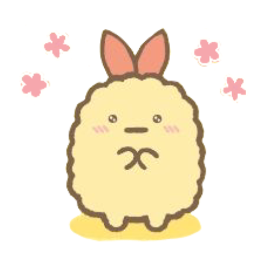

Hi, my name is Michelle Barrera, and I’m an ATEC student. I love exploring different ways to express art, but my main passion is design. I’m drawn to cute little drawings and soft pastel aesthetics that make things feel warm and approachable. To me, design is more than just visuals—it’s about communication. It helps people understand and connect with ideas in a way that words alone sometimes can’t. I believe design puts color into the world, and that’s what makes it so powerful.
